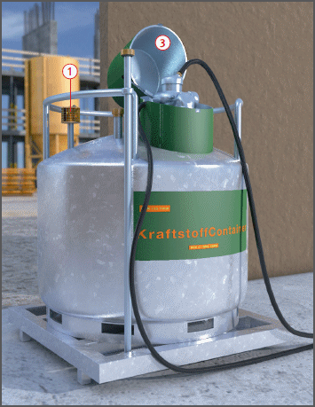

An Tankstellen können Kraftstoffe gasförmig oder flüssig austreten. Es besteht Brand- und Explosionsgefahr.
Allgemeines
Möglichst Tankcontainer mit IBC-Zulassung verwenden.
Diesel-Tankanlagen müssen für die komplette Anlage eine gültige baurechtliche Zulassung haben.
Das vorhandene Typenschild muss z. B. Angaben enthalten über Inhaltsstoff, Type und Lagervolumen.
Nur doppelwandige Tankanlagen mit Leckanzeigegerät verwenden .
Ausnahme: Aufstellung einwandiger Tankanlagen in Auffangwannen.
Tankanlagen müssen mit Überfüllsicherung ausgerüstet sein.
Nur automatisch selbstschließende, bauartzugelassene Zapfpistolen verwenden.
Bei häufigen Betankungsvorgängen an einem Ort, z. B. Bauhof, müssen die Aufstellfläche und der Tankbereich (Schlauchlänge + 2,00 Meter) einen festen, undurchlässigen Boden haben, z. B. Beton oder Asphalt.
Abstand zum nächsten Gebäude mindestens 10,00 Meter.
Schutzmaßnahmen
Geeignete Maßnahmen treffen, um eine Beschädigungen der Tankanlage durch Baufahrzeuge zu vermeiden.
Tankfläche durch Warnschilder kennzeichnen. Unbefugten ist der Aufenthalt verboten.
Darauf achten, dass durch die Tankanlage keine Flucht- und Rettungswege versperrt werden.
Feuerlöscher gut erreichbar und griffbereit aufhängen.
Bindemittel für ausgelaufenen Kraftstoff in ausreichender Menge bereitstellen.
Keine brennbaren Stoffe in unmittelbarer Nähe und im Tankstellenbereich lagern.
Auf der Tankfläche (Aufstellfläche undTankbereich) gilt absolutes Rauchverbot.
Betankung nur, wenn Motor und Fremdheizung abgestellt sind.
Kraftstoff nur in Tanks der Arbeitsmaschinen und in zugelassene Transportbehälter einfüllen .
Zapfeinrichtung gegen unbefugte Benutzung sichern .
Betankung der Tankanlage und Arbeitsmaschinen ununterbrochen beobachten.
Beim Befüllen des Kraftstofftanks Grenzwertgeber anschließen.
Ausgelaufenen Kraftstoff sofort mit geeigneten Bindemitteln aufsaugen und aufnehmen bzw. verunreinigtes Erdreich aufnehmen. Verschmutzte Bindemittel bzw. Erdreich in Sammelbehältern lagern.
Sicherstellen, dass ausgelaufener Kraftstoff nicht in Straßeneinläufe oder Gewässer gelangen kann.
Aufstellen einer Betriebsanweisung und mindestens jährliche Unterweisung der Beschäftigten in der Handhabung der Tankanlage und der Sicherheitseinrichtung.
Reparaturen an Tankanlagen nur von Fachfirmen durchführen lassen.

Prüfungen
Sachverständigenprüfungen (nach BAM-GGR 002 anerkannte Prüfstelle) von Tankanlagen:
vor der ersten Inbetriebnahme,
wenn sie länger als 1 Jahr außer Betrieb waren,
wiederkehrend alle 5 Jahre Sachverständigenprüfungen (anerkannte Prüfstelle) von Tankcontainern.
Wiederkehrend alle 30 Monate eine Prüfung des äußeren Zustands und der einwandfreien Funktion der Bedienungseinrichtung.
Regelmäßige Überprüfung der Sicherheitseinrichtungen und der Tankanlage auf Dichtheit.
 .
. .
. .
.